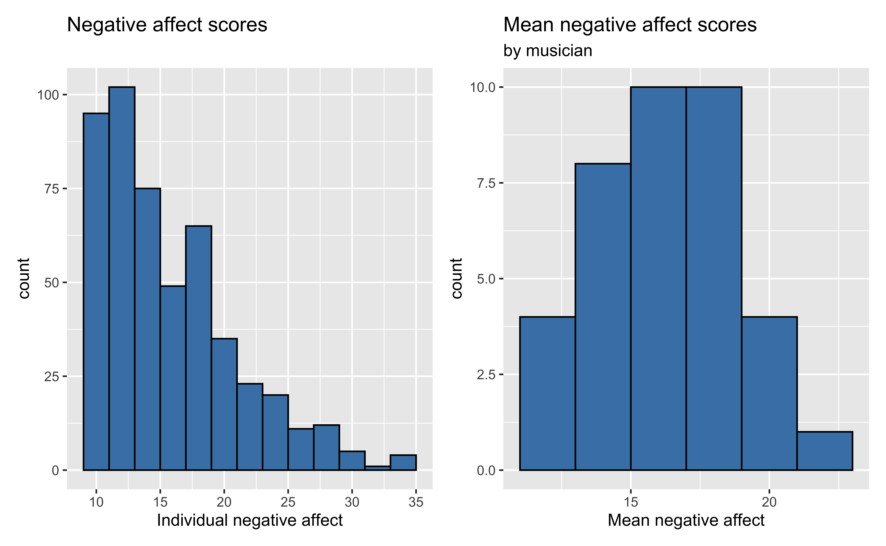
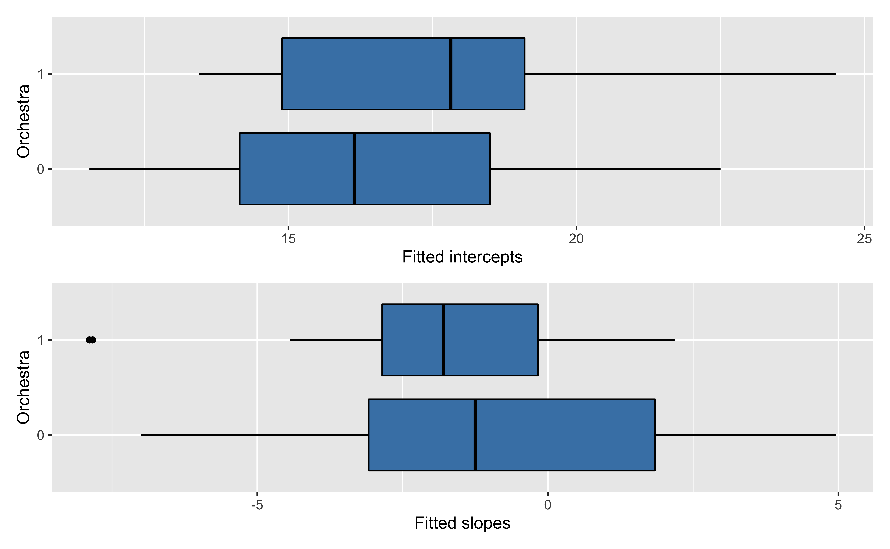
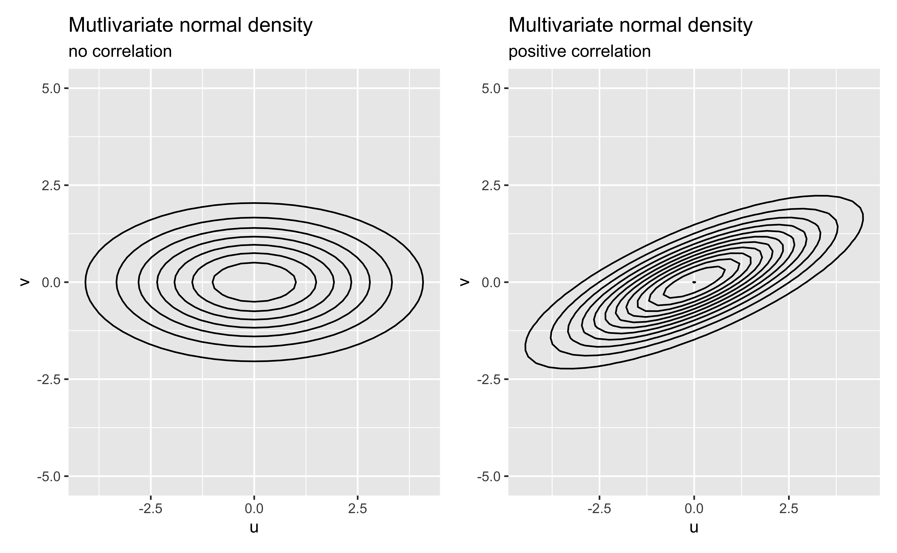

| id | diary | large_ensemble | orchestra | na |
|---|---|---|---|---|
| 1 | 1 | 0 | 0 | 11 |
| 1 | 2 | 1 | 0 | 19 |
| 1 | 3 | 1 | 0 | 14 |
| 43 | 1 | 0 | 0 | 19 |
| 43 | 2 | 0 | 0 | 13 |
| 43 | 3 | 0 | 0 | 19 |
Fitting multilevel models
Prof. Maria Tackett
Nov 30, 2022
Announcements
Due dates
- Statistics experience due Fri, Dec 09, 11:59pm
- Project written report due Fri, Dec 09, 11:59pm
- Team Feedback #2 due Tue, Dec 06, 11:59pm (check for email from Teammates)
Exam 02: Mon, Dec 05 (evening) - Thu, Dec 08, 12pm (noon)
Exam 02 review on Mon Dec 05
Click here for lecture recordings - available until Dec 05, 11:59pm
See Week 14 activities
Learning goals
- Understand how multilevel model can be used to take correlation into account
- Interpret fixed effects of multilevel model
- Fit multilevel model in R
Data: Music performance anxiety
The data musicdata.csv come from the Sadler and Miller (2010) study of the emotional state of musicians before performances. The dataset contains information collected from 37 undergraduate music majors who completed the Positive Affect Negative Affect Schedule (PANAS), an instrument produces a measure of anxiety (negative affect) and a measure of happiness (positive affect). This analysis will focus on negative affect as a measure of performance anxiety.
Data: Music performance anxiety
The primary variables we’ll use are
na: negative affect score on PANAS (the response variable)perform_type: type of performance (Solo, Large Ensemble, Small Ensemble)- Create variable
large_ensemble: 1 if large ensemble performance, 0 otherwise
- Create variable
instrument: type of instrument (Voice, Orchestral, Piano)- Create variable
orchestra: 1 if orchestral instrument, 0 otherwise
- Create variable
Look at data
Draw the data structure, and add the Level One and Level Two observational units and variables.
Unviariate EDA
Bivariate EDA

Bivariate EDA

Fitting the model
Questions we want to answer
The goal is to understand variability in performance anxiety (na) based on performance-level and musician-level characteristics. Specifically:
What is the association between performance type (large ensemble or not) and performance anxiety? Does the association differ based on instrument type (orchestral or not)?
Modeling workflow
We will fit the model in two parts:
1️⃣ Fit a separate model for each musician understand the association between performance type and anxiety (Level One models).
2️⃣ Then fit a system of models to predict the fitted coefficients in the Level One models based on instrument type (Level Two models).
- How many Level One models will we fit?
- How many Level Two models will we fit?
1️⃣ Level One model
We’ll start with the Level One model to understand the association between performance type and performance anxiety for the \(i^{th}\) musician.
\[na_{ij} = a_i + b_i ~ LargeEnsemble_{ij} + \epsilon_i, \hspace{5mm} \epsilon_{ij} \sim N(0,\sigma^2)\]
Why is it more meaningful to use performance type for the Level One model than instrument?
For now, estimate \(a_i\) and \(b_i\) using least-squares regression.
Level One model for one student
Below is partial data for observation #22
| id | diary | large_ensemble | orchestra | na |
|---|---|---|---|---|
| 22 | 1 | 0 | 1 | 24 |
| 22 | 2 | 1 | 1 | 21 |
| 22 | 3 | 1 | 1 | 14 |
| 22 | 13 | 1 | 1 | 12 |
| 22 | 14 | 1 | 1 | 19 |
| 22 | 15 | 0 | 1 | 25 |
Level One model for musician 22
Application exercise
See Part 3: Level One Models to fit the Level One model for all 37 musicians.
Level One model summaries

Recreated from BMLR Figure 8.9
Now let’s consider if there is an association between the estimated slopes, estimated intercepts, and the type of instrument.
Level Two Model
The slope and intercept for the \(i^{th}\) musician can be modeled as
\[\begin{aligned}&a_i = \alpha_0 + \alpha_1 ~ Orchestra_i + u_i \\ &b_i = \beta_0 + \beta_1 ~ Orchestra_i + v_i\end{aligned}\]
Note
The response variable in the Level Two models are not observed outcomes but the (fitted) slope and intercept from each musician
Application exercise
See Part 4: Level Two Models.
Estimated coefficients by instrument
Level Two model
Model for intercepts
| term | estimate | std.error | statistic | p.value |
|---|---|---|---|---|
| (Intercept) | 16.283 | 0.671 | 24.249 | 0.000 |
| orchestra | 1.411 | 0.991 | 1.424 | 0.163 |
Model for slopes
| term | estimate | std.error | statistic | p.value |
|---|---|---|---|---|
| (Intercept) | -0.771 | 0.851 | -0.906 | 0.373 |
| orchestra | -1.406 | 1.203 | -1.168 | 0.253 |
Writing out the models
Level One
\[\hat{na}_{ij} = \hat{a}_i + \hat{b}_i ~ LargeEnsemble_{ij}\]
for each musician.
Level Two
\[\begin{aligned}&\hat{a}_i = 16.283 + 1.411 ~ Orchestra_i \\ &\hat{b}_i = -0.771 - 1.406 ~ Orchestra_i\end{aligned}\]Composite model
\[\begin{aligned}\hat{na}_i &= 16.283 + 1.411 ~ Orchestra_i - 0.771 ~ LargeEnsemble_{ij} \\ &- 1.406 ~ Orchestra:LargeEnsemble_{ij}\end{aligned}\]What is the predicted average performance anxiety before solos and small ensemble performances for vocalists and keyboardists? For those who play orchestral instruments?
What is the predicted average performance anxiety before large ensemble performances for those who play orchestral instruments?
Disadvantages to this approach
⚠️ Weighs each musician the same regardless of number of diary entries
⚠️ Drops subjects who have missing values for slope (7 individuals who didn’t play a large ensemble performance)
⚠️ Does not share strength effectively across individuals.
Application exercise
See Part 5: Distribution of \(R^2\) values.
Unified approach to two-level modeling
Framework
Let \(Y_{ij}\) be the performance anxiety for the \(i^{th}\) musician before performance \(j\).
Level One
\[Y_{ij} = a_i + b_i ~ LargeEnsemble_{ij} + \epsilon_{ij}\]
Level Two
\[\begin{aligned}&a_i = \alpha_0 + \alpha_1 ~ Orchestra_i+ u_i\\ &b_i = \beta_0 + \beta_1~Orchestra_i + v_i\end{aligned}\]Coefficients are estimated using likelihood-based methods (instead of least squares) to address the previously mentioned disadvantages
Composite model
Plug in the equations for \(a_i\) and \(b_i\) to get the composite model \[\begin{aligned}Y_{ij} &= (\alpha_0 + \alpha_1 ~ Orchestra_i + \beta_0 ~ LargeEnsemble_{ij} \\ &+ \beta_1 ~ Orchestra_i:LargeEnsemble_{ij})\\ &+ (u_i + v_i ~ LargeEnsemble_{ij} + \epsilon_{ij})\end{aligned}\]
- The fixed effects to estimate are \(\alpha_0, \alpha_1, \beta_0, \beta_1\)
- The error terms are \(u_i, v_i, \epsilon_{ij}\)
- We will estimate variability in the error terms \(\sigma_u, \sigma_v, \sigma_\epsilon\)
Note
We no longer need to estimate \(a_i\) and \(b_i\) directly as we did earlier. They conceptually connect the Level One and Level Two models.
Error terms
We generally assume that the error terms are normally distributed, e.g. error associated with each performance of a given musician is \(\epsilon_{ij} \sim N(0, \sigma^2)\)
For the Level Two models, the errors are
- \(u_i\): deviation of musician \(i\) from the mean performance anxiety before solos and small ensembles after accounting for the instrument
- \(v_i\): deviance of musician \(i\) from the mean difference in performance anxiety between large ensembles and other performance types after accounting for instrument
We will also estimate \(\rho_{uv}\) to account for fact that \(u_i\) (the intercepts) and \(v_i\) (the slopes) are correlated for the \(i^{th}\) musician
Slopes vs intercepts by musician

Recreated from Figure 8.11
Describe what we learn about the association between the slopes and intercepts based on this plot.
Distribution of Level Two errors
Use a multivariate normal distribution for the Level Two error terms \[\left[ \begin{array}{c} u_{i} \\ v_{i} \end{array} \right] \sim N \left( \left[ \begin{array}{c} 0 \\ 0 \end{array} \right], \left[ \begin{array}{cc} \sigma_{u}^{2} & \rho_{uv}\sigma_{u}\sigma_v \\ \rho_{uv}\sigma_{u}\sigma_v & \sigma_{v}^{2} \end{array} \right] \right)\]
where \(\sigma^2_u\) and \(\sigma^2_v\) are the variance of \(u_i\)’s and \(v_i\)’s respectively, and \(\sigma_{uv} = \rho_{uv}\sigma_u\sigma_v\) is covariance between \(u_i\) and \(v_i\)
- What does it mean for \(\rho_{uv} > 0\)?
- What does it mean for \(\rho_{uv} < 0\)?
Visualizing multivariate normal distribution
Recreated from Figure 8.12
Fit the model in R
Fit multilevel model using tidymodels and the multilevelmod R packages. Display results using the tidy() function from the broom.mixed package.
Fit the model in R
| effect | group | term | estimate | std.error | statistic |
|---|---|---|---|---|---|
| fixed | NA | (Intercept) | 15.930 | 0.641 | 24.833 |
| fixed | NA | orchestra1 | 1.693 | 0.945 | 1.791 |
| fixed | NA | large_ensemble1 | -0.911 | 0.845 | -1.077 |
| fixed | NA | orchestra1:large_ensemble1 | -1.424 | 1.099 | -1.295 |
| ran_pars | id | sd__(Intercept) | 2.378 | NA | NA |
| ran_pars | id | cor__(Intercept).large_ensemble1 | -0.635 | NA | NA |
| ran_pars | id | sd__large_ensemble1 | 0.672 | NA | NA |
| ran_pars | Residual | sd__Observation | 4.670 | NA | NA |
Final model
\[\begin{aligned}\hat{na}_i &= 15.930 + 1.693 ~ Orchestra_i - 0.911 ~ LargeEnsemble_{ij} \\ &- 1.424 ~ Orchestra_i:LargeEnsemble_{ij} \\[5pt] &\hat{\sigma}_{u} = 2.378 \hspace{20mm} \hat{\sigma}_{v} = 0.672 \hspace{20mm} \hat{\sigma}_{\epsilon} = 4.670 \\ &\hat{\rho}_{uv} = -0.635\end{aligned}\]Acknowledgements
The content in the slides is from - BMLR: Chapter 7 - Correlated data - BMLR: Chapter 8 - Introduction to Multilevel Models
- Sadler, Michael E., and Christopher J. Miller. 2010. “Performance Anxiety: A Longitudinal Study of the Roles of Personality and Experience in Musicians.” Social Psychological and Personality Science 1 (3): 280–87. http://dx.doi.org/10.1177/1948550610370492.